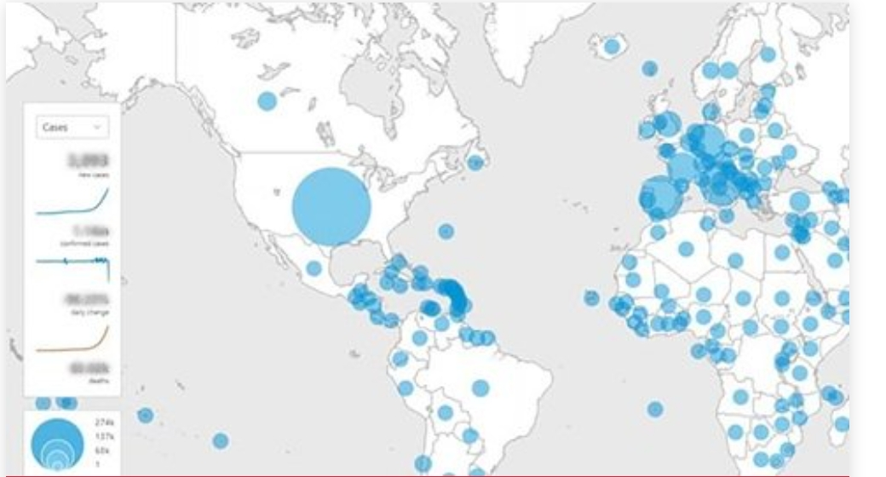

The COVID-19 pandemic has had a major effect on our lives. Many of us are facing challenges that can be stressful, overwhelming, and cause strong emotions in adults and children. Public health actions, such as social distancing, are necessary to reduce the spread of COVID-19, but they can make us feel isolated and lonely and can increase stress and anxiety
Learning to cope with stress in a healthy way will make you, the people you care about, and those around you become more resilient.It is natural to feel stress, anxiety, grief, and worry during the COVID-19 pandemic. Below are ways that you can help yourself, others, and your community manage stress. Globally, as of 5:55pm CEST, 13 July 2021, there have been 187,086,096 confirmed cases of COVID-19, including 4,042,921 deaths, reported to WHO. As of 13 July 2021, a total of 3,327,841,570 vaccine doses have been administered.
